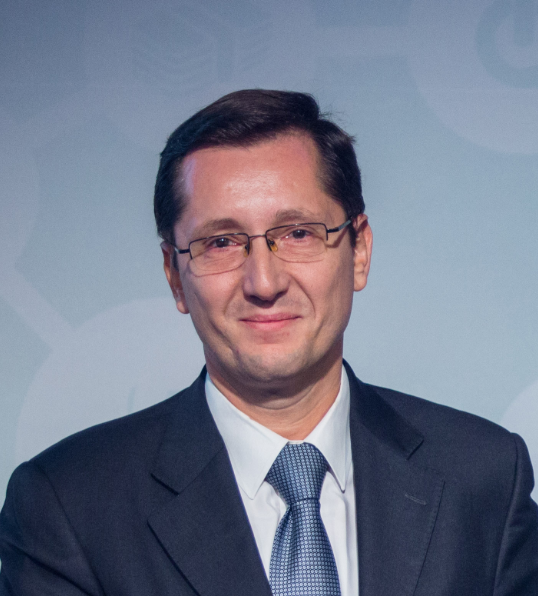
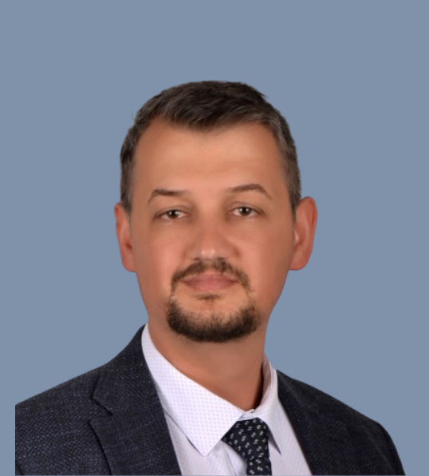
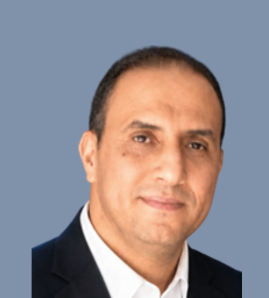
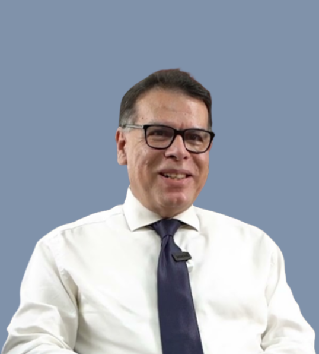

🖼️
Speakers Banner
imagefichier : speakers-banner.png
ACMCST 2027 — International Conference | Béni Mellal, Morocco
We are delighted to invite esteemed experts in their respective fields to serve as Keynote Speakers at ACMCST 2027 — International Conference on Advanced Communications with Modern Circuits and Systems Technologies, to be held on November 10–12, 2027 in Béni Mellal, Morocco.

He joined the Electromagnetics and Photonics Eng. Group, Dept. of Signal Theory and Communications, UPC, as an Assistant Professor in 1993, Associate Professor in 1997, and Full Professor since 2007. In 1999, he was on sabbatical leave at the Microwave Remote Sensing Lab., of the Univ. of Massachusetts, Amherst. Since September 2022 he is a visiting professor at the UAE University, Al Ain, Abu Dhabi, UAE.
His research interests are focused in: 1) microwave remote sensing, with special emphasis in microwave radiometry by aperture synthesis, 2) remote sensing using signals of opportunity (GNSS-R), 3) radio frequency interference detection and mitigation, and 4) nanosatellites as a tool to test innovative remote sensors. His publication record includes over 251 papers in peer-reviewed journals, 9 book chapters and the book Emery and Camps, "Introduction to Satellite Remote Sensing. Atmosphere, Ocean, Land and Cryosphere Applications," Elsevier, 2017, 860 pages, and more than 515 conference presentations. According to Google Scholar/Scopus his h-index is 58/46, and his publications have received more than 13611/9415 citations. According to the 2020 Stanford ranking, he is ranked in the top 1% of all researchers in all categories.
He holds 12 patents, and has advised 29 Ph.D. Thesis students (+ 9 on-going), and more than 150 final project and M.Eng. Theses. These PhD students have now responsibility positions at Universities, companies and research centers. It is worth mentioning that 4 are at NASA/JPL, 1 at U. Michigan, and 2 have started their own companies (BALAMIS and MITICS). A total of 5 patents have been transferred to them.
He was the Scientific Coordinator of the CommSensLab Research Center (María de Maeztu Excellence Research unit 2016-2020). He is the PI of the first four UPC nano-satellites: 1) 3Cat-1: 1U CubeSat with 7 tech demos, 2) 3Cat-2: a 6U CubeSat with an innovative dual-frequency dual-polarization GNSS-R payload, 3) 3Cat-4: a 1U CubeSat with a SDR implementing a microwave radiometer, a GNSS-Reflectometer, and AIS receiver, and 4) FSSCAT: a tandem mission formed by two 6U CubeSats — the first mission contributing to the Copernicus System based on CubeSats.
He has participated in all Technical Committee Programs of IGARSS since 2000, was Chair of uCal 2001, Co-chair of IGARSS 2007, co-chair of GNSS-R '10, and general co-chair of IGARSS 2020. He was the President-Founder of the IEEE GRSS Chapter at Spain, and 2017-2018 President of the IEEE Geoscience and Remote Sensing Society.
Awards — Research: 2nd National Award of University Studies (1993); INDRA award to the best PhD in Remote Sensing (1997); UPC extraordinary Ph.D. Award (1999); Research Distinction of the Generalitat de Catalunya (2002); European Young Investigator Award (2004); ICREA Academia award (2009, 2015); Fellow of the IEEE (2011).
Awards — Technology Transfer: 1st Duran Farell award (2000); Ciutat de Barcelona award (2001); "Salvà i Campillo" Award COETC (2004); 7th Duran Farell award (2010); ESNC Award-Barcelona Challenge for FENIX system (2015); Overall Winner of 2017 Copernicus Masters Competition.
Awards — Education: Jaume Vicens Vives award 2012 from the Generalitat de Catalunya; UPC award to Teaching Quality 2012; IEEE Geoscience and Remote Sensing Society – Education Award 2021.

Dr. Metin Mutlu AYDIN was born in 1988 in Kırşehir, Türkiye. He completed his bachelor and master degrees in Civil Engineering at Dokuz Eylül University (BSc in 2010, MSc in 2013), and his PhD in Civil Engineering from Akdeniz University in 2017. He is currently working as a full-time Associate Professor in the Department of Civil Engineering, Division of Transportation, at the Faculty of Engineering, Ondokuz Mayıs University.
His research interests include Intelligent Transportation Systems (ITS), Electric and Autonomous Vehicles, Transportation Planning, Green Environment, Sustainable and Resilient Cities, and Renewable Energy in Transport. Up to date, he has served as a project manager or researcher in 24 national and 7 international projects, has produced nearly 120 scientific publications, and has attended more than 30 international conference presentations across the world.
In 2018, he received the "Best Transportation Paper of the Year" award from the Institute of Civil Engineers (ICE) in London, UK, the "Best Publication of the Year" award in both 2018 and 2019, and the "Best PhD Thesis of the Year" award in 2018 from the General Directorate of Highways (KGM) in Türkiye for his PhD thesis.
In 2023, his British Council-supported project titled "i-gCar4ITS: Innovative and Green Carrier Development for Intelligent Transportation System Applications" received the "Jury Special Award" from ITS Türkiye. In 2025, he was awarded the "Publication of the Year" in the field for his work on vehicle simulators.
Following his contributions to the field of Intelligent Transportation Systems, he was elected as a "Management Board Member of ITSTürkiye", representing academia for the 2025–2027 term. He also founded the Center of Excellence in Intelligent Transportation and Structures (#CEITSSLab) in 2024. In the same year, #CEITSSLab was awarded the "Academic R&D Award" by ITSTürkiye and received an additional "R&D Award" from the Ministry of Transport and Infrastructure of Türkiye (UDHAM).
Since 2020, Dr. Aydın has also worked as a member of the Editorial Board of two prestigious SCI-Expanded journals: Proceedings of the Institution of Civil Engineers – Transport and VilniusTech Transport.
Awards — Research: Best Transportation Paper of the Year – ICE London (2018); Best Publication of the Year – KGM Türkiye (2018, 2019); Best PhD Thesis of the Year – KGM Türkiye (2018); Publication of the Year (2025).
Awards — Technology Transfer: Jury Special Award – ITS Türkiye (2023); Academic R&D Award – ITSTürkiye (2024); R&D Award – Ministry of Transport and Infrastructure of Türkiye / UDHAM (2024).

Dr. Abdelhafid El Ouardi received his Ph.D. in Electronics and Computer Engineering from the University of Paris-Sud (France) in 2005 and his Habilitation to Supervise Research (HDR) in 2016. He is currently an Associate Professor at the Faculty of Sciences of the Université Paris-Saclay and a researcher at the SATIE Laboratory, where he leads research activities related to Hardware-Software Codesign for Embedded Systems.
His research focuses on embedded computing systems, heterogeneous CPU-GPU-FPGA architectures, hardware-software codesign, intelligent sensors, real-time signal and image processing, and edge artificial intelligence. His work aims at bridging the gap between algorithmic complexity and embedded computing architectures through efficient co-design methodologies. His research has been applied to a wide range of domains, including intelligent transportation systems, autonomous vehicles, SLAM (Simultaneous Localization and Mapping), precision agriculture, smart grids, industrial inspection systems, physiological signal processing, and railway infrastructure monitoring.
Dr. El Ouardi has supervised or co-supervised more than 18 doctoral dissertations and currently supervises several Ph.D. candidates in collaboration with industrial and academic partners. He has authored more than 100 scientific publications, including 37 journal papers and over 60 international conference contributions. His publications have appeared in leading journals such as IEEE Transactions on Intelligent Transportation Systems, IEEE Robotics and Automation Magazine, Robotics and Autonomous Systems, Journal of Real-Time Image Processing, IEEE Sensors Journal, and Sustainable Energy, Grids and Networks.
He serves as Associate Editor of the Journal of Real-Time Image Processing (Springer) and regularly acts as reviewer, program committee member, and scientific expert for numerous international conferences and journals.
Throughout his career, he has participated in and coordinated several national and international research projects involving industry and academia, particularly in the fields of intelligent mobility, autonomous systems, embedded artificial intelligence, and energy-efficient computing.
Current Research Interests: Embedded AI systems, multimodal perception for autonomous vehicles, hardware acceleration of machine learning algorithms, railway infrastructure monitoring, intelligent energy management systems, and next-generation heterogeneous computing architectures for real-time applications.

Mr. Majid LAHLOU is a renowned Moroccan expert in the fields of information technology, telecommunications, and the digital transformation of public organizations. He currently serves as Inspector General at the Ministry of Agriculture, Maritime Fisheries, Rural Development, and Water and Forests, having previously headed the Ministry's Information Systems Directorate (DSI) for many years.
Professional Background
Mr. LAHLOU began his career in 1992 as a telecommunications engineer specializing in banking systems and electronic payment networks. In 1995, he joined Al Akhawayn University in Ifrane as Network Manager. In 2000, he joined Télécom Partners, where he served successively as Director of Development and then as CEO (2004). During this period, he expanded the company's operations in the fields of telecommunications infrastructure, IT security, satellite systems, and advanced technology solutions.
In 2009, Mr. Lahlou joined the Ministry of Agriculture as Director of Information Systems. There, he led the Ministry's digital transformation. In 2025, he was appointed Inspector General of the same ministry and also became a member of the CNDP (National Commission for the Control of Personal Data Protection).
Achievements and Contributions
Throughout his career, Mr. Majid LAHLOU has actively contributed to the digitization of public services and the development of information technology in Morocco. Notably, he is the initiator of the AGRO IT DAYS events, promoting digital innovation in the agricultural sector; winner of the 2011 E-Gov E-mtiaz Award (G2B category) for the SABA system for digitizing investment files; and Morocco's focal point for the international Feeding Knowledge program at the 2015 Milan Expo. In addition, he is involved in supporting young talent as a speaker on e-commerce and a mentor to startups, particularly in the fields of agritech and digital innovation.
Academic Background
Mr. LAHLOU holds a degree in telecommunications engineering from Institut National des Postes et Télécommunications (INPT). He has also furthered his education with an MBA (Ponts ParisTech – EHTP), a certificate in digital transformation (emlyon business school), and training in the governance of public institutions (International University of Rabat).